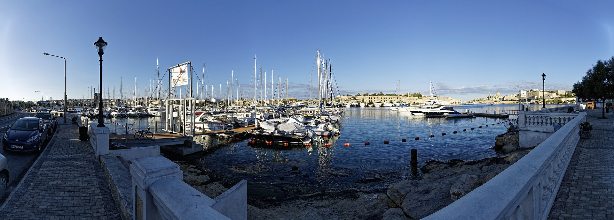

The visible waterfront can orient a viewing. Confirm entrances, crossings, pavement continuity and whether any marina facility is actually public.

TA’ XBIEX · THREE ADDRESS CONTEXTSWaterfront.
Waterfront.
Then street.
The marina edge, the residential streets uphill and the professional addresses around the peninsula create different daily patterns. A Ta’ Xbiex label starts the viewing; it does not finish it.
ONE LOCALITY, DISTINCT EDGES
Read the peninsula without borrowing a promise.
The Local Council describes Ta’ Xbiex as a peninsula overlooking Marsamxett Harbour. That supports a waterfront-and-inland structure. It does not prove a view, quiet street, marina access or walking distance for any home.
Gradient, frontage, parking and evening activity belong to the exact street. A locality-wide lifestyle description cannot substitute for that check.
“Ta’ Xbiex seafront” also appears in neighbouring addresses. Keep Ta’ Xbiex distinct from Gżira, Msida and Pietà.
Villas and maritime history, without a made-up trail.
The council records older villas opposite the sea and the HMS Gregale association around four villas on Ta’ Xbiex Terrace. That supports a restrained streetscape note, not public access, opening hours or a connected heritage walk.
Ta’ Xbiex Local Council history ↗The waterfront has different kinds of access.
The Royal Malta Yacht Club places its club at Ta’ Xbiex Seafront and describes sailing and social activity from the marina site. Public observation, club membership and organised sailing access remain separate things.
Royal Malta Yacht Club information ↗EVERYDAY CHECKS
Use real destinations, then test the route.
These current sources establish practical context. They are not rankings and do not claim that any destination is nearest to a property. Recheck hours, services, appointments and access directly.
Community clinic
Primary HealthCare lists Ta’ Xbiex Community Clinic at the Local Council premises. Its fixed schedules should be checked on the live service page.
Clinic directory ↗Local Council
The council publishes its office at Highrise Apartments on Triq l-Imradd. Current opening arrangements belong on the live contact page.
Council contact ↗Ta Xbiex stops
Malta Public Transport lists stops 3524 and 3525. Use the current journey planner for a real trip; this page freezes no route number or timetable.
Stops and timetables ↗SPAR Ta’ Xbiex
SPAR’s current store directory lists a Ta’ Xbiex branch on Giuseppe Cali Street. Hours can change, so recheck the operator page before visiting.
SPAR store directory ↗FOOD WITHOUT A RANKING
Three addresses, no “best of” list.
These operator-backed examples show different parts of Ta’ Xbiex. Each still needs a release-day status check and an exact journey from the permitted origin.
Mamma Mia
The operator gives Ta’ Xbiex Seafront and says it moved to Ta’ Xbiex Yacht Marina in 2004. That makes it a marina-edge example, not a proximity claim for every home.
Mamma Mia contact ↗Agora
Agora’s contact page gives ix-Xatt Ta’ Xbiex as its location. Published hours are changeable and are deliberately omitted here.
Agora contact ↗Brasa
Brasa publishes an address on Triq l-Abate Rigord, providing an inland-street counterpoint to the waterfront examples.
Brasa operator page ↗No line across the water.
This edition draws no locality boundary, property pin, waterfront shortcut, walking route or journey estimate. Any future route must use verified road or pedestrian geometry from an exact permitted origin and destination. Bus schedules, live car traffic and taxi-price observations remain separate sources.
Open the peninsula overview only when you need it.
The map frames Ta’ Xbiex and neighbouring place labels for orientation. It deliberately draws no boundary, route, distance, travel time or listing location and loads from OpenStreetMap only after your click.
Ta’ Xbiex Local Council history · Address Registrar · Primary HealthCare clinics · Malta Public Transport · SPAR Malta · Mamma Mia · Agora · Brasa · Royal Malta Yacht Club
No ranking, fixed opening hours, property-specific distance, guaranteed view, parking claim, accessibility promise or locality-wide journey time is implied.